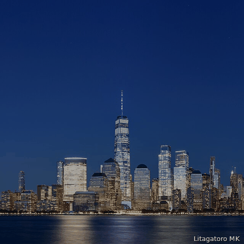
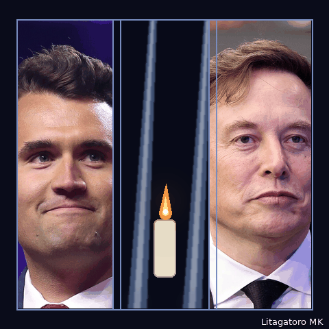
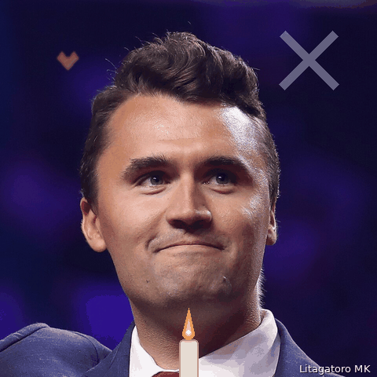

Charlie's portrait with a candle flickering in front, then the twin beams, Elon, and the closing words.
The beams never leave the frame while the portraits crossfade: Charlie, candle, Elon, then the words.

Manhattan at dusk, the tribute beams brighten, and Charlie fades in like a memory over the city.

Three panels — Charlie, the beams with candle, Elon — assembling into one memorial tryptich, then the words.

Nearly still: Charlie, a soft X, a small heart, one candle — with a single quiet flash of the beams.